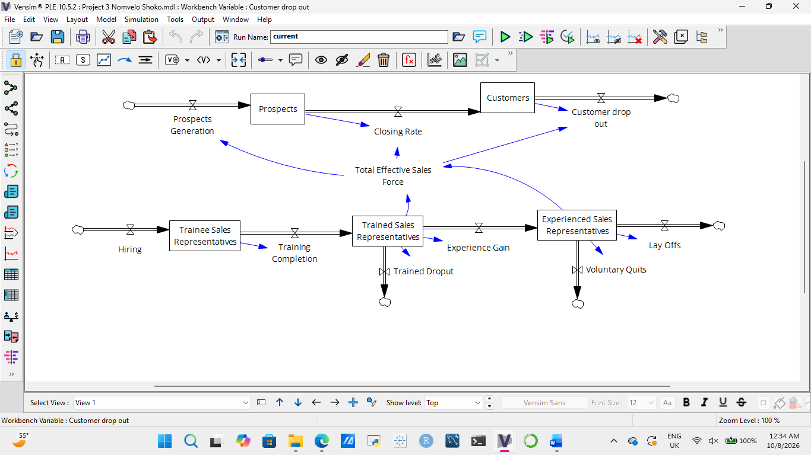
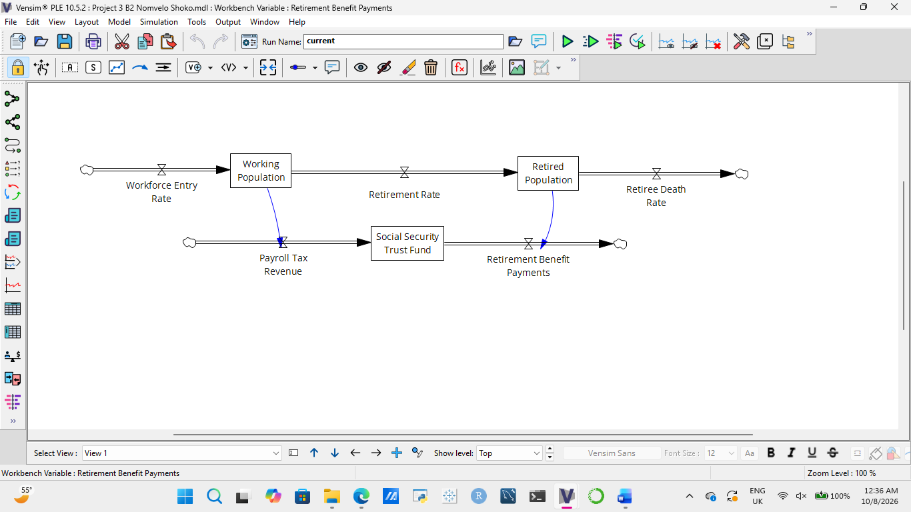
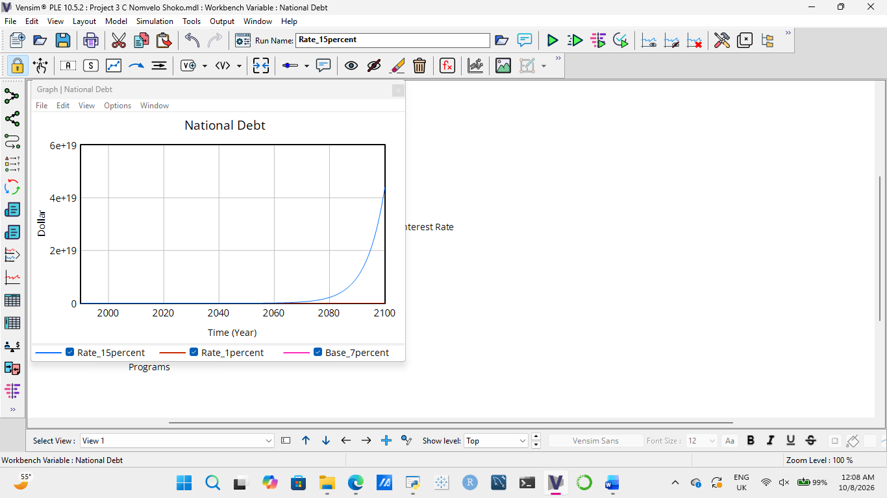

How feedback shapes systems: national debt scenario modeling
I used Vensim to map stock-and-flow structures and explore how interest-driven reinforcing feedback changes simulated national debt under three assumptions.
Course: BUS 276a, Business Dynamics: Managing in a Complex World · Brandeis University · Professor Brad Morrison
The modeling question
How do stocks, flows and feedback links determine the behavior of a system over time? The assignment explored three settings: a sales-force pipeline, a Social Security system and a simplified national debt model. The debt simulation is the central quantitative case study.
Mapping operational systems
Sales force and customer pipeline
I mapped prospect generation, prospects, closing, customers and customer dropout, alongside hiring, training and experienced sales representatives. Information links connect the effective sales force to customer acquisition and retention.

Social Security system
A second model separates population stocks (working population and retirees) from the Social Security Trust Fund. Payroll tax receipts and benefit payments are money flows, while retirement and deaths are people flows.

National debt model
The model begins with national debt of $3.23 trillion. Government revenue and non-interest program spending are each held at $1 trillion per year, so the net deficit is driven by interest payments on existing debt.
National Debt = INTEG(Borrowing, 3.23 × 10¹²)
Borrowing = Net Federal Deficit
Net Federal Deficit = Government Spending − Government Revenue
Interest Payments = National Debt × Interest Rate
The feedback is reinforcing: higher debt increases interest payments, which increase the deficit and borrowing, leading to still higher debt. At 7%, the initial modeled deficit is $226.1 billion per year.

Scenario results
Changing only the assumed annual interest rate produces very different long-term simulated debt levels. The doubling times below are theoretical continuous-time benchmarks, not measured Vensim crossing times.
| Annual interest rate | Debt doubling time | Simulated debt in 2100 |
|---|---|---|
| 1% | 69.31 years | $9.70 trillion |
| 7% (base) | 9.90 years | $7.014 quadrillion |
| 15% | 4.62 years | $43.82 quintillion |
These outputs illustrate the sensitivity of a reinforcing system to the assumed interest rate; they should not be interpreted as predictions of actual U.S. debt.
What the analysis demonstrates
Small changes in the growth-rate assumption can have enormous consequences over long horizons when interest costs feed back into borrowing. Stock-and-flow diagrams make the causal structure visible, while simulation helps communicate how the same structure behaves under different assumptions.
Limitations
This deliberately simplified model holds government revenue and non-interest spending constant for 110 years. It does not model economic growth, changing fiscal policy or government responses to rising debt. It is therefore a learning model for feedback and sensitivity, not a credible fiscal forecast.
My contribution
I completed the stock-and-flow classifications, developed the Vensim system diagrams, documented the debt model equations and compared the interest-rate scenarios as part of my Business Dynamics coursework.